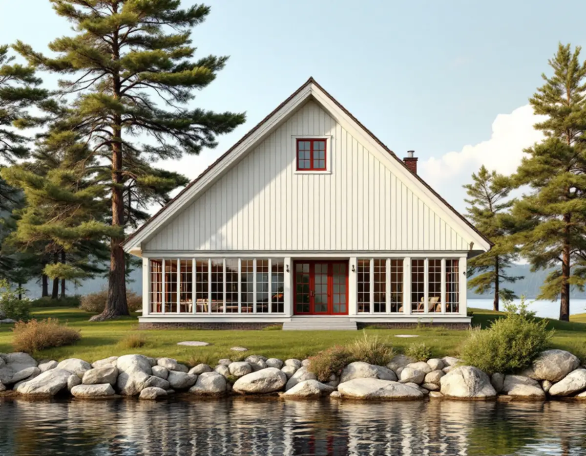
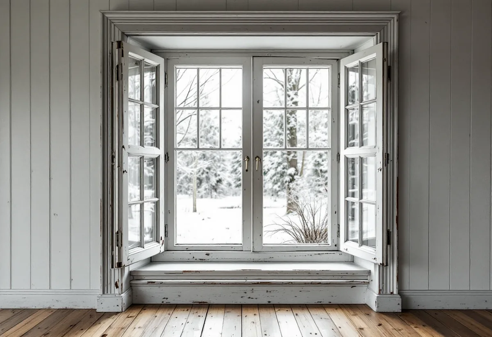

Platsbesök
Fönster, veranda och husets ålder går vi igenom.
Många äldre sommarvillor i Österåker har bara enkla fönsterbågar, eftersom de byggdes för sommaren. När de blir åretruntboende är det lättare att komplettera fönstren än att byta dem. Geal Entreprenad AB renoverar fönster i villor och fritidshus i Svinninge, Åkersberga och resten av Österåker.

Kommunens råd och riktlinjer för byggande i Svinninge beskriver Svinningeudd och Nantes som kommunens äldsta och bäst bevarade sommarhusbebyggelse. Där finns sommarvillor från sekelskiftet, ofta klädda med liggande hyvlad fasspontpanel som ursprungligen målades med linoljefärg, och senare sportstugor och fritidshus från 1930-talet och framåt.
Allt fler flyttar enligt kommunen ut permanent, och fritidshusen byggs om för att passa dagens krav på permanentbostäder. Det är då fönstren brukar bli en fråga, eftersom ett hus som ska värmas året runt ställer andra krav än en sommarvilla.

Eftersom sommarvillorna bara användes under den varma säsongen har de flesta äldre hus enkla fönsterbågar, skriver kommunen. Det bästa sättet att få bättre värmeekonomi är enligt riktlinjerna att tillverka lösa innerbågar som monteras på gångjärn.
Innerbågen tillverkas efter det befintliga fönstrets mått och profiler och hängs på insidan. Fönstret ser likadant ut från utsidan, och båda bågarna kan öppnas för vädring och fönsterputs.
Äldre fönster tillverkades så gott som undantagslöst av utvalt kärnvirke och har mycket lång livslängd om de underhålls kontinuerligt, skriver kommunen. Vid renovering räcker det oftast att byta de rötskadade delarna, oftast spröjsarna och bågens undre del.
Behöver ett enstaka fönster bytas helt råder riktlinjerna att låta en fönsterhantverkare specialtillverka en kopia av det gamla. Nya standardfönster har sällan samma proportioner som de gamla, och fel insatta kan de förstöra utseendet på hela fasaden.
Österåkers kommun har en lista med frågor för att avgöra om ett hus kan vara värdefullt: om det finns skyddsbestämmelser i detaljplanen, om huset ligger i eller nära ett kulturmiljöområde i Österåkerskartan, om det finns med i en inventering eller ett kulturmiljöprogram, om det har bevarade byggnadsdetaljer som fönster och om det är byggt före 1920. Svarar du ja på någon av frågorna kan huset vara värdefullt.
Sommarvillorna från sekelskiftet i Nantes beskrivs i riktlinjerna med regelbundet placerade fönster med smårutig indelning, och kommunen visar äldre fönster med små rutor, smäcker konstruktion och sannolikt munblåst glas. Det är precis den sortens fönster som är värda att renovera.
Många glasverandor har rikt spröjsade fönster, ibland med färgat glas, och det ursprungliga glaset var ofta handblåst. Kommunen påpekar att det är svårt att ersätta med dagens planglas, som ger ett helt annat uttryck, och att man därför ska vara extra rädd om de ursprungliga glasen.
Vid renovering av en veranda tar vi därför ut gamla glas försiktigt, märker dem och sätter tillbaka dem i samma båge. Stolpar och räcken har ofta rötskador nertill, och där byter vi bara de skadade delarna mot nya med samma utseende.
Sommarvillorna hade enligt riktlinjerna en rik färgskala, och fönsterbågarna målades ofta i en mörkare färg som engelskt rött, grönt eller brunt. Sportstugorna hade ofta mörkt bruna fasader med gröna snickerier, eller faluröda fasader med vita snickerier.
Österåkers kommun skriver att du behöver bygglov om fastigheten ligger inom ett kulturhistoriskt särskilt värdefullt område eller om byggnaden är särskilt värdefull, och att det kan gälla även underhåll. Österåkerskartan visar områden med kulturhistoriska värden. Om fönsterbyte i kommunen kan du läsa under fönsterbyte i Österåker.
Fönster, veranda och husets ålder går vi igenom.
Österåkerskartan och detaljplanen kontrolleras.
Renovering, glas och innerbågar står var för sig.
Rötskadade spröjsar och bågdelar byts, gamla glas sparas.
Lösa innerbågar tillverkas och hängs på gångjärn.
Linoljefärg i husets kulör, och vi går igenom resultatet.
Skatteverket räknar reparation av fönster och målning av fönster på ett småhus som rotarbete. Avdraget gäller även en bostad som du använder som fritidsbostad.
Avdraget är högst 30 procent av arbetskostnaden, högst 50 000 kronor per person och år och högst 75 000 kronor tillsammans med rutavdrag. Material och resor ger inget avdrag. Geal drar avdraget direkt på fakturan.
Antalet fönster, verandans storlek och spröjsning, hur mycket virke som är rötskadat, om innerbågar ska tillverkas och om gamla glas ska sparas. Efter ett gratis platsbesök får du ett skriftligt kostnadsförslag.
Byta eller renovera fönster.
Fönsterbyte i Stockholm →Takbyte, takbesiktning och plåtarbeten.
Takläggare i Österåker →Svinninge, sommarvillor och sportstugor.
Takrenovering i Österåker →Uthyrning, kulturmiljö och fornlämningar.
Attefallshus i Österåker →VA-utbyggnad, öar och vattensmarta val.
Badrumsrenovering i Österåker →Rivning, markarbete och gatukostnader.
Byggföretag i Österåker →Sommarvillornas fasadkulörer.
Fasadmålning i Österåker →Skärgårdshus, fritidshus och villor i Österåker.
Fasadrenovering i Österåker →Varsamhet, kulturvärden och kustlägen i Österåker.
Fönsterbyte i Österåker →Jämna golv och färre trösklar.
Golvläggare i Österåker →Golv i sommarhus som blivit bostad.
Golvslipning i Österåker →Helårshus, brunn och avlopp.
Köksrenovering i Österåker →Sommarvillor, röda stugor och efterkrigsvillor.
Målare i Österåker →Plåtdetaljer på sommarvillorna.
Plåtslagare i Österåker →Bryggor, altaner och äldre snickerier.
Snickare i Österåker →Lertegel, lovfrågan och återbruk av pannor.
Takbyte i Österåker →Sommarvillan blir åretruntbostad.
Tapetsering i Österåker →Grannmedgivande, strandskydd och utstakning.
Tillbyggnad i Österåker →Fritidshuset, värmen och anmälan.
Totalrenovering i Österåker →